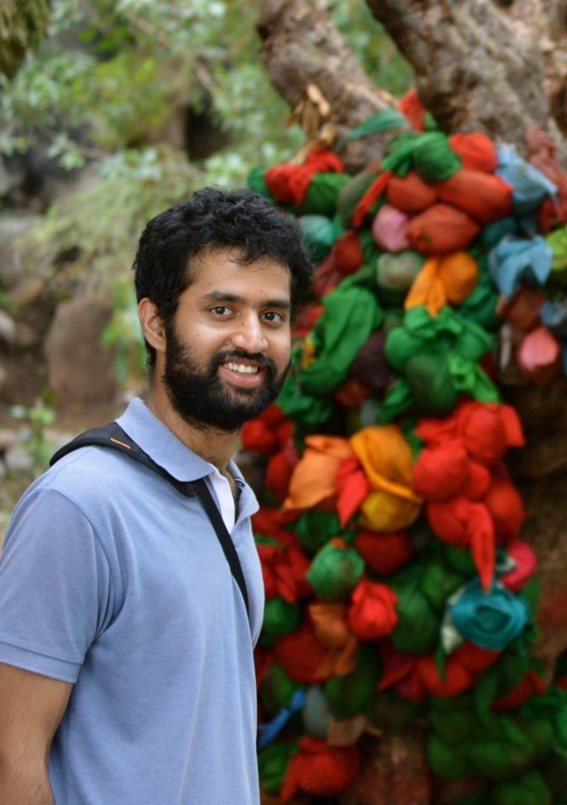

|
 |
Yeshwanth Cherapanamjeri
Ph.D Student
Computer Science
UC Berkeley
I am a second year Ph.D student in Computer Science at UC Berkeley advised by Prof. Peter Bartlett. I'm broadly interested in statistical and computational issues arising in machine learning, focusing on the development of efficient algorithms and computational lower bounds. Previously, I'd spent two wonderful years as a research fellow in the Machine Learning & Optimization group at Microsoft Research, India, where I was fortunate to work with Dr. Prateek Jain, Dr. Praneeth Netrapalli and Dr. Nagarajan Natarajan on provable non-convex algorithms for machine learning. Previously, I was an undergraduate student at IIT Bombay where I obtained my B. Tech in Computer Science in 2015. I worked on Entity Linking and Disambiguation with Prof. Ganesh Ramakrishnan and Prof. Soumen Chakrabarti for my undergraduate thesis.
You can find a link to my resume here.
|